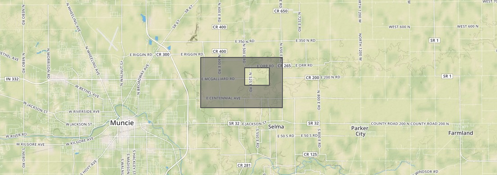

maps & geometry
tools
provides the map imagery
js to put things on the map and interact
js for doing analysis and cool stuff with map data
coordinates
longitude = x coordinate
latitude = y coordinate
geojson is made up of 3 major things:
geometries
geometries are spatial data, with coordinates
{
"type": "Point",
"coordinates": [
-85.386703, 40.192933
]
}
coordinates are longitude, latitude (x, y)
{
"type": "LineString",
"coordinates": [
[-85.3939, 40.1956],
[-85.3864, 40.2045],
[-85.3239, 40.2716],
[-85.3143, 40.2779]
]
}
{
"type": "Polygon",
"coordinates": [
[
[-85.31501770019531, 40.211391988438685],
[-85.31501770019531, 40.24494329371422],
[-85.2593994140625, 40.24494329371422],
[-85.2593994140625, 40.211391988438685],
[-85.31501770019531, 40.211391988438685]
],
[
[-85.28343200683594, 40.22816971852209],
[-85.28343200683594, 40.23760536584024],
[-85.26832580566406, 40.23760536584024],
[-85.26832580566406, 40.22816971852209],
[-85.28343200683594, 40.22816971852209]
]
]
}
polygons can have multiple rings
the first ring is the outer boundary, others are holes

rings must always start and end with the same point
[-85.28343200683594, 40.22816971852209],
[-85.28343200683594, 40.23760536584024],
[-85.26832580566406, 40.23760536584024],
[-85.26832580566406, 40.22816971852209],
[-85.28343200683594, 40.22816971852209]
{
"type": "MultiPolygon",
"coordinates": [
[
[
[-85.31501770019531, 40.211391988438685],
[-85.31501770019531, 40.24494329371422],
[-85.2593994140625, 40.24494329371422],
[-85.2593994140625, 40.211391988438685],
[-85.31501770019531, 40.211391988438685]
]
],
[
[
[-85.28343200683594, 40.22816971852209],
[-85.28343200683594, 40.23760536584024],
[-85.26832580566406, 40.23760536584024],
[-85.26832580566406, 40.22816971852209],
[-85.28343200683594, 40.22816971852209]
]
]
]
}
multipolygons have an array of polygons as their coordinates
features
features wrap geometries, adding tabular data to them
{
"type": "Feature",
"properties": {
"yield": 200,
"windspeed": 15.0
},
"geometry": {
"type": "Point",
"coordinates": [-85.386703, 40.192933]
}
}
collections
collections wrap up geometries or features
(thats GeometryCollection and FeatureCollection, respectively)
{
"type": "FeatureCollection",
"features": [
{
"type": "Feature",
"properties": {
"yield": 200,
"windspeed": 15.0
},
"geometry": {
"type": "Point",
"coordinates": [-85.386703, 40.192933]
}
}
]
}
{
"type": "GeometryCollection",
"geometries": [
{
"type": "Point",
"coordinates": [-85.386703, 40.192933]
}
]
}
how to map*
*with leaflet
several parts:
1. a map - container for controls, tiles and layers
// HTML:
<div id="map_canvas"></div>
// JS:
var map = L.map('map_canvas');
map.setView([y, x], zoom);
looks really boring.
2. one or more tile layers
imagery is made of tiles so systems don't have to load the whole world as one image
3 components of a tile
zoom level; 1 through 20~
x east/west tile location
y north/south tilelocation
L.tileLayer('http://{s}.tiles.mapbox.com/v3/examples.map-20v6611k/{z}/{x}/{y}.png', {
maxZoom: 18
}).addTo(map);
3. layers / features
var marker = L.marker([40.439209, -84.977702]).addTo(map);
var shape = L.geoJson( {
"type": "Feature",
"properties": {},
"geometry": {
"type": "Polygon",
"coordinates": [
[
[-84.98903274536133, 40.42551942170478],
[-84.98903274536133, 40.44564069181862],
[-84.96397018432616, 40.44564069181862],
[-84.96397018432616, 40.42551942170478],
[-84.98903274536133, 40.42551942170478]
]
]
}
}).addTo(map);
turf.js
a set of gis tools, built around geojson
modular
lightweight
fast
frontend
backend
awesome
modular
lightweight
fast
frontend
backend
awesome
var turf.point([-85.386703, 40.192933]);
// creates a geojson point feature
var turf.polygon([[
[-85.31501770019531, 40.211391988438685],
[-85.31501770019531, 40.24494329371422],
[-85.2593994140625, 40.24494329371422],
[-85.2593994140625, 40.211391988438685],
[-85.31501770019531, 40.211391988438685]
]]);
// creates a geojson polygon feature
var p1 = // the left polygon;
var p2 = // the right polygon;
var p3 = turf.intersect(p1, p2);